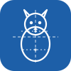

배경 #1d5fa8 유지 · SVG 원본은 이 폴더에 있음
stash 유산. 재고 앱 느낌.
가장 직관적. 앱 아이콘으로 무난.
개성 있음. 작은 크기에서 실루엣이 약할 수 있음.
반려동물 앱에서 흔함. 종 구분 없음.
kibble 이름과 직결. 고양이 특화는 약함.
pet diary 컨셉. 정보 밀도가 조금 높음.

관찰 일지 느낌. 아이콘으로는 다소 딱딱.